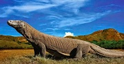
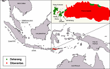
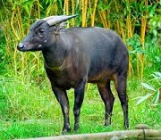
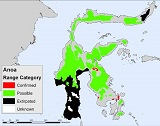
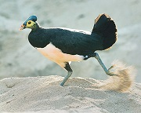
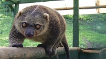
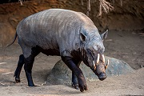
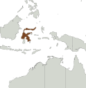
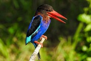
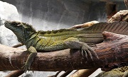

Zona Peralihan
Kenali fauna yang tercantum pada wilayah ini melalui foto, daerah asal, klasifikasi taksonomi, dan ciri khasnya.
Kenali satwa di zona Peralihan
Gunakan pencarian untuk menemukan nama atau daerah persebaran.
7 dari 7 fauna ditampilkan
| Fauna | Asal & persebaran | Taksonomi | Ciri khas |
|---|---|---|---|
 Komodo |
Pulau Komodo  |
Lihat klasifikasi
|
Komodo adalah kadal terbesar yang ada di dunia. Digadang-gadang komodo menjadi suku terakhir bangsa dinosaurus. Ciri khas komodo adalah ukurannya yang besar, bentuk kepalanya pipih, kaki menekuk, dan ekornya tebal. Baca selengkapnya |
 Anoa |
Sulawesi dan Buton  |
Lihat klasifikasi
|
Memiliki tubuh kekar dengan bagian belakang sedikit lebih tinggi dari bahu. Anoa dewasa memiliki tinggi bahu rata-rata 86 cm. Tanduk anoa dewasa berbentuk segitiga, pipih, dan berkerut. Tanduk dimulai dari dahi dan mengarah ke belakang secara diagonal. Baca selengkapnya |
 Burung Maleo Senkawor |
Sulawesi TenggaraPeta persebaran tidak dicantumkan |
Lihat klasifikasi
|
Burung ini memiliki bulu berwarna hitam, kulit sekitar mata berwarna kuning, iris mata merah kecokelatan, kaki abu-abu, paruh jingga, dan bulu sisi bawah berwarna merah-muda keputihan. Di atas kepalanya terdapat tanduk atau jambul keras berwarna hitam. Baca selengkapnya |
 Kuskus |
Sulawesi, Maluku, dan PapuaPeta persebaran tidak dicantumkan |
Lihat klasifikasi
|
Kuskus memiliki bulu yang tebal dan bermacam warna seperti coklat,hitam dan putih. Selain itu kuskus mempunyai ekor yang panjang dan kuat (prehensile) yang berfungsi sebagai alat untuk berpegangan saat berpindah dari satu dahan ke dahan lainnya. Baca selengkapnya |
 Babi Rusa |
Sulawesi  |
Lihat klasifikasi
|
Karena fisiknya yang menyerupai babi, namun taring panjang melengkung yang timbul di atas hidungnya, tampak seperti ranggah rusa, sehingga mereka disebut babi rusa. Salah satu ciri yang mudah diingat ia punya cula atau gading panjang yang mencuat ke atas menembus moncongnya. Baca selengkapnya |
 Burung Raja-Udang |
Nusa Tenggara dan PapuaPeta persebaran tidak dicantumkan |
Lihat klasifikasi
|
Kebanyakan bulu raja-udang berwarna cerah. Hijau dan biru adalah warna yang paling umum. Burung raja-udang memiliki paruh yang panjang seperti belati. Raja-udang memiliki kaki yang pendek, meskipun spesies yang berburu mangsa di tanah memiliki kaki yang lebih panjang. Baca selengkapnya |
 Soa-soa Layar |
SulawesiPeta persebaran tidak dicantumkan |
Lihat klasifikasi
|
Soa-soa memiliki kepala kecil dengan moncong panjang dan lubang hidung oval di dekat ujung moncong. Pada kepala dan moncong terdapat semacam punuk berskala besar dan sebagian lagi berskala kecil. Karena populasinya yang semakin langka, soa-soa layar masuk dalam kategori hewan yang harus dilindungi. Baca selengkapnya |